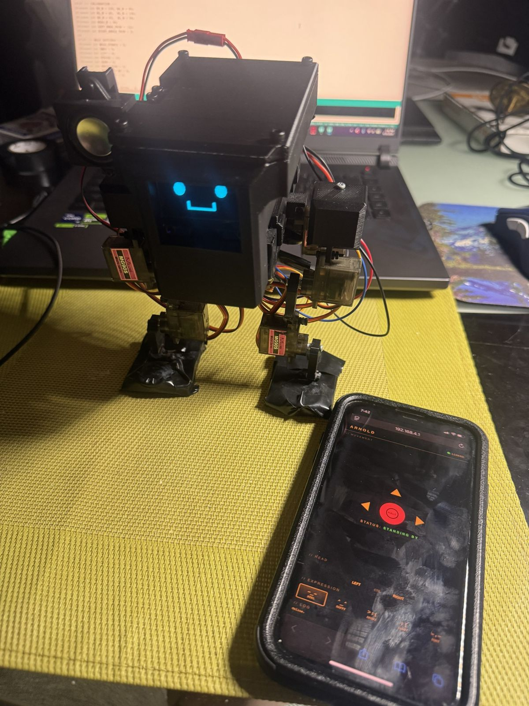
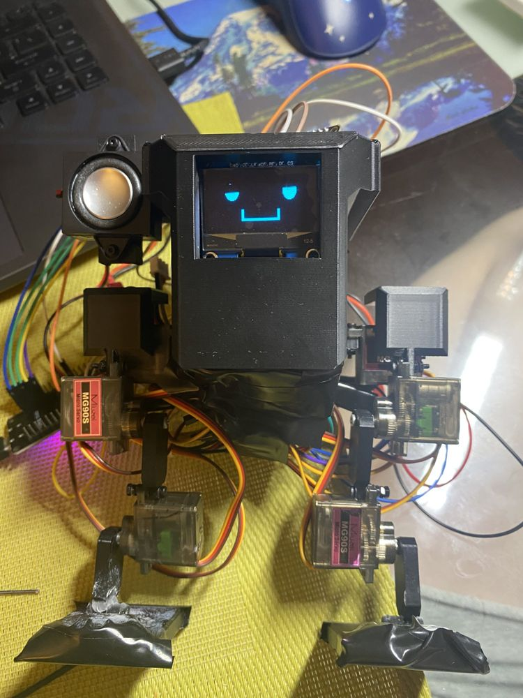
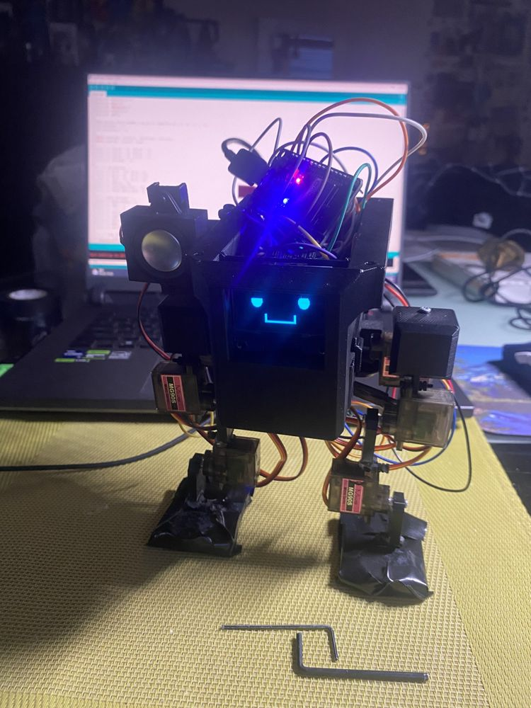

01How it started
The biped was the first project I ever made, after learning to solder inspired me to start making things. I severely underestimated how challenging it would be, though, and the first iteration was not made very well.
02The first version
It lacked the sensors that tell the robot what position it's in, and my wiring was messy. Servo orientation was another issue I ran into early on. It did walk, but the balancing was way off and needed a major redesign.
On the bright side, the first iteration taught me basic electronics, how to use batteries, and the fundamentals of Fusion 360.



03The second version
The second time around, I came back with much more experience after designing the quadruped and the Mantis Blades. I ended up with a design that focuses more on roll movement in the legs, which rotates the bot and keeps it balanced.
Technical notes on the second version
How it works
- Hardware. Ten MG90S servos (hip roll, hip pitch, knee, ankle pitch and ankle roll on each leg), driven by a PCA9685 PWM board. An MPU-6500 IMU on the head measures tilt and rotation rate.
- Standing up. The servos grip one at a time, 60 ms apart, so ten motors never start together on the supply, and a tip check lets go if the robot starts to fall during the grip.
- Balance. A capture-point controller tilts both ankles from the IMU's tilt and tilt rate. It rests inside a small deadband instead of chasing every half degree, because the servos move in half-degree steps and chasing them made the robot rock.
- Walking. A quick rocking walk: half a second per step, knees bent, with the hips swaying side to side on a smooth sine so the weight sits over one foot as the other lifts. The robot counts its steps, stops itself at the target distance, and logs lean, twist and sway for every step. A host-side gait simulator checks the foot paths before a change goes to the robot.
What it taught me
Tuning the sway
The walk drifted to the right. The IMU log showed the body swinging about twice as far sideways as commanded, rolling onto the edges of its feet, where a foot pivots and slides. I ran the walk with one change per test: with 26 mm of sway it drifted right, with 17 mm it drifted left, and with 20 mm it walked twelve steps straight. Lengthening the stride the same way, from 5 to 6 mm per step, took it from 55 to 66 mm per walk with the same stability.
Filtering servo noise
Servo buzz showed up as 40 to 60 degrees per second of gyro vibration while standing still. Cutting the rate filter from 15 Hz to 5 Hz removed about 2.7 degrees of false error from the balance signal.
Moving the center of mass
My first gait fell backward every time. The battery mounted behind the hips put the center of mass behind the ankles. I moved to a crouched gait with a hip shift that places the feet behind the hips, and tuned it from logged step data instead of guessing.
Weight limit from servo torque
Working from the MG90S stall torque and my 12.5 cm legs, a knee in single support limits the whole robot to roughly 300 g. I check every hardware change against that number.
Next
Longer strides. At 7 mm per step the walk itself holds, but the robot tips forward on the stopping step, so the stop comes next. After that: wiring the IMU so walking can't shake it loose, then turning. The robot has no hip yaw joint, so turning has to come from a leg stagger during double support.